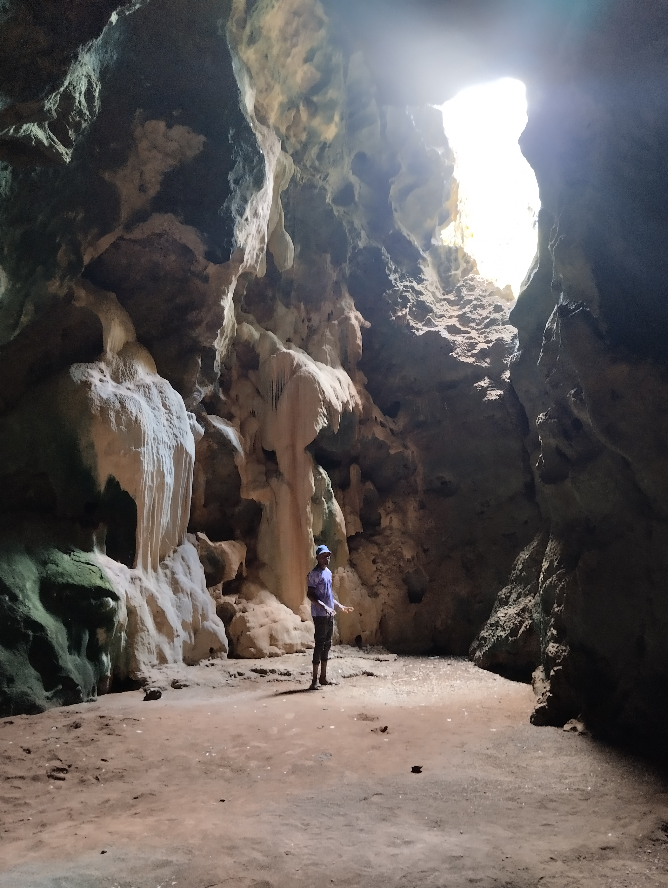
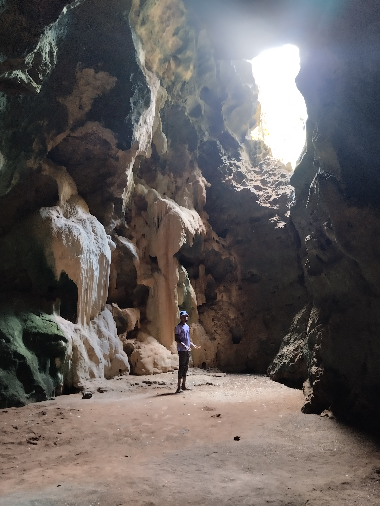

Exploring the Interior of Panga Ya Saidi
 



The interior of Panga Ya Saidi cave in Coast of Kenya, (Kilifi County), displays an intriguing archaeological record from the Middle Stone Age (approximately 78,000 years ago) to the Iron Age (approximately 400 years ago). The cave's 19 stratified layers offer a window into the technological evolution of early humans, demonstrating a shift in lithic technologies with evidence of miniaturization and a variety of raw materials used by ancient inhabitants..
The cave's interior is crucial for understanding human adaptation in eastern Africa because it contains one of Africa's oldest known intentional burials, dating from the Middle Stone Age, along with traces of symbolic behavior like ochre and marine shell beads. Additionally, the cave's interior contains animal remains that provide insights into past subsistence strategies and environmental shifts, and plant and animal remains show that the cave's inner chambers were part of agricultural and trading networks during the Iron Age.